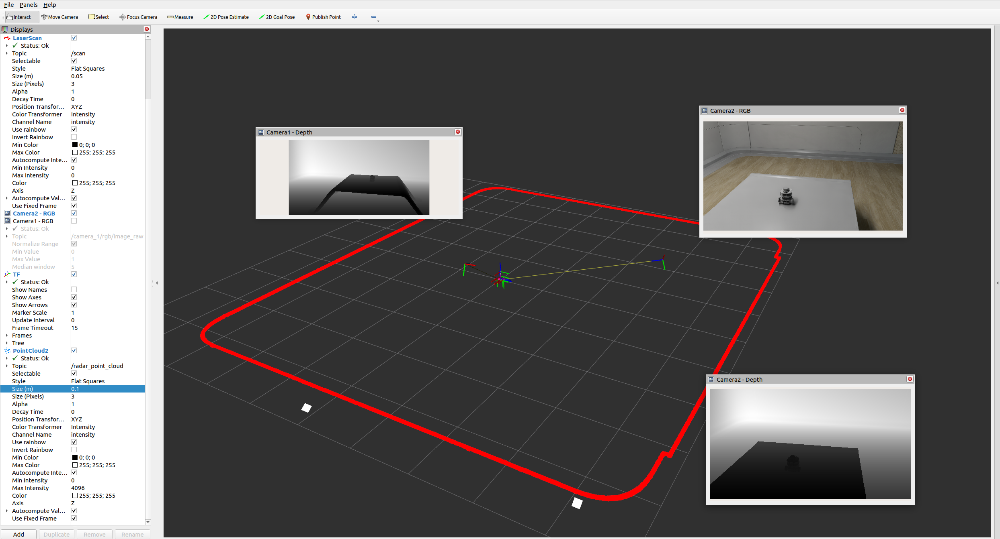
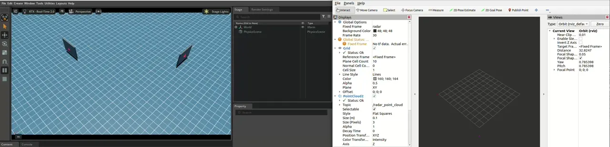

RTX 雷达传感器#
Isaac Sim 支持 RTX 雷达传感器，可模拟雷达检测数据，包括逐点径向速度。 RTX 雷达需要启用 Motion BVH 才能进行多普勒速度估计。
警告
在 Isaac Sim 6.0 GA 中，无论 omni:sensor:tickRate 属性如何，RTX Radar 都会自动触发。此问题将在未来的版本中修复。
注意
ROS2 RTX Radar Helper 节点未公开
frameSkipCount 输入。有关多 tick
迁移指南，请参阅 Multi-Tick Rendering。
学习目标#
在本教程中，你：
介绍 RTX 雷达传感器及其要求。
创建 RTX 雷达传感器并将其附加到机器人上。
将雷达检测数据以 PointCloud2 消息形式发布到 ROS 2，并包含可选的径向速度元数据。
在 RViz2 中可视化雷达点云。
入门指南#
重要
确保在运行 Isaac Sim 之前，在终端中正确 source ROS 2 环境。
先决条件
已完成 ROS 2 Cameras 和 RTX Lidar Sensors 教程。
在启动 Isaac Sim 之前已设置
FASTRTPS_DEFAULT_PROFILES_FILE环境变量，并启用了 ROS 2 bridge。有关 RTX Radar 传感器配置的详细信息，请查阅 RTX Radar Sensor 文档。
警告
RTX Radar 需要启用 Motion BVH。请从命令行启动 Isaac Sim，并附带 --/renderer/raytracingMotion/enabled=true（及相关标志）。有关完整的标志集和独立 Python 等效方法，请参阅 How to Enable Motion BVH。若未启用此功能，雷达传感器将无法初始化。
添加 RTX Radar ROS 2 Bridge#
从 URDF Import: Turtlebot 教程中的 turtlebot 场景开始。
通过转到 Create > Sensors > RTX Radar > NVIDIA > Generic RTX Radar 来添加 Radar 传感器。
要将雷达传感器放置在机器人上，请将 Radar prim 拖动到
/World/tb3_burger_processed/Geometry/base_footprint/base_link/base_scan下方。按照以下方式修改 Property 选项卡中的 Transform 字段：将任何位移归零。
将 Rotate Z 设置为
90.0，使 Radar prim 指向前方。将 Translate Z 设置为
1.0，使 Radar prim 略高于机器人底座，从而更容易看到返回信号。
使用 OmniGraph 节点将 ROS 2 桥接与传感器输出连接起来。在 Stage 面板中，选择
/World/tb3_burger_processed/Geometry/base_footprint/base_link/base_scan，以便在雷达传感器链接旁边创建新的 Action Graph，然后通过转到 Window > Graph Editors > Action Graph 打开可视化脚本编辑器。点击 New Action Graph 并将其命名为ROS_RadarRTX；生成的图形路径为/World/tb3_burger_processed/Geometry/base_footprint/base_link/base_scan/ROS_RadarRTX。将该图形作为其发布对象的传感器链接的子级，可保持机器人资产的可组合性：当 Turtlebot 被引用到另一个场景中时，雷达图形会随之移动，而不是停留在 Stage 根目录下。向图形中添加以下节点：On Playback Tick：在按下 Play 后触发所有下游节点。ROS2 Context Node：使用给定的 Domain ID（默认为 0）创建 ROS 2 上下文。Isaac Run One Simulation Frame：在开始时运行一次创建渲染产品（render product）的流程。Isaac Create Render Product：将cameraPrim输入设置为步骤 2 中创建的 RTX Radar prim。ROS2 RTX Radar Helper：将雷达检测结果发布为 PointCloud2 消息。连接步骤 d 中的渲染产品输出。将frameId设置为base_scan，将topicName设置为radar_point_cloud。
连接节点：
On Playback Tick > outputs:tickâIsaac Run One Simulation Frame > inputs:execInIsaac Run One Simulation Frame > outputs:stepâIsaac Create Render Product > inputs:execInIsaac Create Render Product > outputs:execOutâROS2 RTX Radar Helper > inputs:execInIsaac Create Render Product > outputs:renderProductPathâROS2 RTX Radar Helper > inputs:renderProductPath
正确设置图形后，按 Play 开始仿真。
对于 RViz2 可视化：
在已 source 的终端中运行 RViz2 (
rviz2)。将 Fixed Frame 设置为
base_scan，以匹配雷达的 frame ID。添加一个 PointCloud2 可视化项，并将话题设置为
/radar_point_cloud。若要观察下方的 RViz 图像，请确保仿真正在运行。在已加载 ROS 2 环境的终端中，使用以下命令打开提供的配置：
ros2 run rviz2 rviz2 -d <ros2_ws>/src/isaac_tutorials/rviz2/camera_lidar.rviz
RViz 窗口加载完成后，您可以在左侧的 Display（显示）面板中启用和禁用传感器流。 将 PointCloud2 可视化话题修改为
/radar_point_cloud，以显示雷达点云，而不是激光雷达点云。将 Size (m)（大小 (m)）设置为0.1，使点更加可见。
注意
在下面的 RViz2 图像中，Camera 1 - RGB 窗口已关闭，因为它遮挡了其中一个雷达回波。
注意
通用 RTX 雷达传感器默认配置为生成少量点，因此在此特定场景中通常只能检测到 1-2 个点。其他环境和雷达配置可能会生成不同的点云，且点数可能更多；此示例仅用于教程目的。


重要
确保在运行 RViz2 节点后，将 use_sim_time ROS 2 参数设置为 true。
这可以确保 RViz2 节点与仿真数据保持同步，尤其是在 RViz2 对 Lidar 数据点的位置进行插值时。
请在新的已加载 ROS 2 环境的终端中使用以下命令设置该参数：
ros2 param set /rviz use_sim_time true
图形快捷方式#
有一个用于构建雷达传感器图形的菜单快捷方式。请转到 Tools > Robotics > ROS 2 OmniGraphs > RTX Radar。
如果未列出任何 ROS 2 图形，则需要启用 ROS 2 桥接。系统将弹出一个对话框，要求提供用于填充图形的参数。您必须提供图形路径（Graph Path）、Radar Prim、frameId、节点命名空间（Node Namespaces，如果有的话）、点云主题（Point Cloud Topic），并勾选要包含在发布的 PointCloud2 中的逐点字段对应的元数据复选框（径向速度、强度、时间戳）。如果要将图形添加到现有图形中，请勾选 添加到现有图形？ 复选框。这会将节点追加到现有图形中，并在存在时复用现有的 tick 节点、上下文节点和仿真时间节点。
注意
选择 径向速度 (m/s) 需要创建带有辅助输出级别 "BASIC" 的 OmniRadar prim，以便填充径向速度通道。有关详细信息，请参阅下面的 公开雷达元数据 部分。
编程设置（脚本编辑器）#
您也可以通过编程方式设置雷达 ROS 2 桥接。以下示例创建一个 RTX Radar 传感器，并将其检测结果发布到 ROS 2（有关额外发布逐点径向速度的独立脚本，请参阅下面的 公开雷达元数据）。
注意
请从 Window > Script Editor 中运行此代码片段，该操作需在已运行的 Isaac Sim 会话中进行 —— 它依赖于一个活动的 omni.kit.app 实例和 stage，因此不是一个独立的自包含脚本。若要改为通过 ./python.sh 运行，请将其包裹在 SimulationApp 样板代码中（参见 RTX Lidar Script Sample 中的示例）。
import carb
import omni.graph.core as og
import omni.kit.app
from isaacsim.sensors.experimental.rtx import Radar
# This snippet uses OG nodes from isaacsim.core.nodes (IsaacCreateRenderProduct,
# OgnIsaacRunOneSimulationFrame) and isaacsim.ros2.nodes (ROS2RtxRadarHelper).
# Enable both before constructing the action graph.
ext_mgr = omni.kit.app.get_app().get_extension_manager()
ext_mgr.set_extension_enabled_immediate("isaacsim.core.nodes", True)
ext_mgr.set_extension_enabled_immediate("isaacsim.ros2.nodes", True)
# RTX Radar requires Motion BVH to be enabled.
settings = carb.settings.get_settings()
settings.set("/renderer/raytracingMotion/enabled", True)
settings.set("/renderer/raytracingMotion/enableHydraEngineMasking", True)
settings.set("/renderer/raytracingMotion/enabledForHydraEngines", "0,1,2,3,4")
# Create radar
radar = Radar(path="/Radar")
# Create the OmniGraph (mirrors the action graph built by the GUI workflow above).
og.Controller.edit(
{"graph_path": "/ActionGraph", "evaluator_name": "execution"},
{
og.Controller.Keys.CREATE_NODES: [
("OnPlaybackTick", "omni.graph.action.OnPlaybackTick"),
("RunOnce", "isaacsim.core.nodes.OgnIsaacRunOneSimulationFrame"),
("CreateRenderProduct", "isaacsim.core.nodes.IsaacCreateRenderProduct"),
("RadarHelper", "isaacsim.ros2.bridge.ROS2RtxRadarHelper"),
],
og.Controller.Keys.SET_VALUES: [
("CreateRenderProduct.inputs:cameraPrim", radar.paths[0]),
("RadarHelper.inputs:topicName", "radar_point_cloud"),
("RadarHelper.inputs:frameId", "radar"),
],
og.Controller.Keys.CONNECT: [
("OnPlaybackTick.outputs:tick", "RunOnce.inputs:execIn"),
("RunOnce.outputs:step", "CreateRenderProduct.inputs:execIn"),
("CreateRenderProduct.outputs:execOut", "RadarHelper.inputs:execIn"),
("CreateRenderProduct.outputs:renderProductPath", "RadarHelper.inputs:renderProductPath"),
],
},
)
公开雷达元数据#
ROS2 RTX Radar Helper 节点支持在 PointCloud2 消息中包含可选的逐点元数据字段：
outputRadialVelocityMS：包含逐点径向速度（m/s）。要求 OmniRadar prim 在创建时指定
Radar(path, aux_output_level="BASIC")（或在其上编写_replicator:rendervar:GenericModelOutput:channels = ["BASIC"]）。有关已知问题和更多详细信息（包括如何通过 UI 设置该属性），请参阅 Auxiliary Output Level and the GenericModelOutput RenderVar。outputIntensity：包含逐点强度值。
outputTimestamp：包含逐点时间戳。
独立示例：径向速度#
下面的示例展示了如何创建一个 RTX Radar 传感器并将径向速度元数据发布到 ROS 2，以便在可视化时根据径向速度对点云进行着色。该示例创建了两个刚体，它们以循环方式朝向和远离雷达移动，从而使点云中每个点的径向速度均不为零。
运行示例脚本：
./python.sh standalone_examples/api/isaacsim.ros2.bridge/rtx_radar.py在一个已加载 ROS 2 环境的新终端中，运行以下命令以启动 RViz 并显示雷达点云。请根据实际情况将
ros2_ws替换为humble_ws或jazzy_ws。rviz2 -d <ros2_ws>/src/isaac_tutorials/rviz2/rtx_radar.rviz
场景加载完成后，请确认您观察到点云回波根据径向速度着色，并随着刚体循环加速和减速而随时间变化。


总结#
本教程涵盖了：
如何在 Isaac Sim 中创建 RTX Radar 传感器并将其附加到机器人上。
使用
ROS2 RTX Radar HelperOmniGraph 节点将雷达检测结果作为 PointCloud2 消息发布到 ROS 2。在发布的消息中启用逐点径向速度元数据。
在 RViz2 中可视化雷达数据。
后续步骤#
继续学习 ROS 2 教程系列中的下一个教程 ROS 2 Joint Control: Extension Python Scripting，以控制机器人关节并获取关节状态。
深入学习#
由雷达 prim 路径驱动的自动生成的话题命名空间（通过
renderProductPath）在 Automatic ROS 2 Namespace Generation 中进行了介绍。